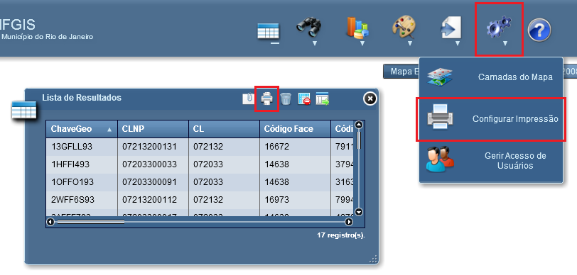

Configurar Impressão
A ferramenta Configurar Impressão permite produzir relatórios baseados nas informações contidas na Lista de Resultados.
A funcionalidade Configurar Impressão poderá ser acessada entre as opções disponíveis da interface de resultados ou através da barra de ferramentas da aplicação.

Configurações da ferramenta de Impressão

Layout: permite a definição do formato do relatório de impressão e a inserção de observações que serão incorporadas ao relatório.
Adicionar Mapa: permite a definição da área do Mapa que será adicionada ao relatório;
Campos da Lista: permite a seleção dos campos que serão impressos junto ao relatório;
Cabeçalho: permite a definição do cabeçalho para o relatório;
Carimbo Cabeçalho: permite a seleção dos cabeçalhos pré-definidos para o relatório;
Rodapé: permite a definição do rodapé para o relatório;
Logotipo: permite a seleção dos logotipos que poderão ser adicionados ao relatório.